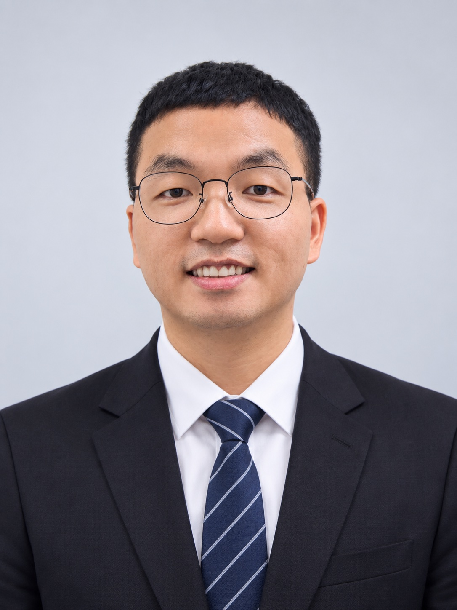

Contact 联系方式
Feel free to get in touch with me. 欢迎通过以下方式与我联系。

WeChat 微信
LiLu_2025
1207956678

MECHANICAL & MANUFACTURING ENGINEER 机械与制造工程师
Mechanical and manufacturing engineer with 10+ years of experience in CNC machining, process development, equipment integration, and advanced manufacturing. 拥有超过10年机械与制造工程经验，专注于CNC加工、 工艺开发、设备集成以及先进制造技术。
I am a Mechanical and Manufacturing Engineer with 10+ years of experience in CNC machining, process development, advanced manufacturing, and equipment integration. 我是一名机械与制造工程师，拥有超过10年的CNC加工、 工艺开发、先进制造和设备集成经验。
My career has progressed from CNC Machinist and Tooling Setter to Technical Supervisor and Development Engineer. This combination of hands-on manufacturing experience and engineering knowledge allows me to approach complex manufacturing challenges from both practical and engineering perspectives. 我的职业经历从CNC操作员和刀具装配员， 逐步发展到技术主管和开发工程师。 丰富的现场制造经验与工程知识相结合， 使我能够从实际制造和工程两个角度解决复杂的制造问题。
My technical experience covers CNC programming and macro programming, machining process development and qualification, mechanical fixture design, CAD/CAM, EDM, dimensional inspection, equipment commissioning, and technical troubleshooting. 我的技术经验涵盖CNC编程和宏程序编程、 加工工艺开发与验证、机械夹具设计、 CAD/CAM、电火花加工、尺寸检测、 设备调试以及技术故障排查。
I have also been involved in the development and integration of customized CNC machining equipment, working with international machine-tool suppliers and supporting Factory Acceptance Testing and commissioning activities. 我也参与过定制化CNC加工设备的开发与集成， 与国际机床供应商进行技术合作，并参与 工厂验收测试（FAT）和设备调试工作。
Experience across CNC machining, manufacturing, and engineering development. 涵盖CNC加工、制造和工程开发等领域的丰富经验。
CNC programming, macro programming, process development, and precision machining. CNC编程、宏程序编程、工艺开发和精密加工。
Mechanical design, machining fixture design, CAD/CAM, and manufacturing engineering. 机械设计、加工夹具设计、CAD/CAM以及制造工程。
Equipment integration, process qualification, and advanced manufacturing and repair technology. 设备集成、工艺验证以及先进制造与维修技术。
Focused on machining process development, advanced manufacturing, and engineering solutions for complex and high-precision components. 专注于复杂及高精度零部件的加工工艺开发、 先进制造以及工程解决方案。
Provided technical leadership for CNC machining, EDM, inspection, equipment development, and manufacturing operations. 为CNC加工、电火花加工、检测、设备开发以及制造运营 提供技术支持和技术领导。
Performed high-precision machining and inspection of gas turbine rotor components. 负责燃气轮机转子零部件的高精度加工和检测。
Worked on CNC milling operations, precision component manufacturing, and inspection. 从事CNC铣削、精密零部件制造及检测工作。
Supported CNC machining operations and tooling setup for precision manufacturing. 支持精密制造中的CNC加工和刀具设置工作。
Supported the development of high-precision machining processes for complex gas turbine rotor repair applications, combining CNC programming, process development, qualification, and manufacturing problem solving. 支持复杂燃气轮机转子维修应用的高精度加工工艺开发， 综合运用CNC编程、工艺开发、工艺验证以及制造问题解决能力。
Supported the development and integration of customized heavy-duty CNC machining equipment for high-precision manufacturing applications, including technical requirements, supplier collaboration, Factory Acceptance Testing, and commissioning activities. 支持高精度制造应用中的定制化重型CNC加工设备开发与集成， 包括技术要求、供应商协作、工厂验收测试以及设备调试。
Supported process qualification and validation for CNC machining and EDM applications, focusing on process stability, quality, repeatability, and manufacturing capability. 支持CNC加工和电火花加工的工艺验证与确认， 重点关注工艺稳定性、质量、重复性和制造能力。
Designed and supported the development of heavy-duty machining fixtures for precision manufacturing of large and complex components. 设计并支持大型复杂零部件精密制造所需的重型加工夹具开发。
Developed and optimized CNC programs and custom macro programs to improve machining efficiency, repeatability, process stability, and automation. 开发和优化CNC程序及自定义宏程序， 提高加工效率、重复性、工艺稳定性和自动化水平。
Designed a multi-finger robotic gripper for flexible object handling, incorporating torque motors, force sensing, and quick-change modules for pick-and-place automation applications. 设计多指机器人夹爪，实现灵活的物体抓取， 集成扭矩电机、力传感以及快速更换模块， 用于自动化取放应用。
Supported the recovery and troubleshooting of CIMCO software and NC simulation capabilities used for CNC program management and machining preparation. 支持CIMCO软件和NC仿真功能的恢复与故障排查， 用于CNC程序管理和加工准备。
Extensive hands-on experience in precision CNC machining and manufacturing of complex components. 拥有丰富的精密CNC加工及复杂零部件制造实践经验。
Development and optimization of CNC programs and custom macro programs for complex machining applications. 开发和优化复杂加工应用中的CNC程序及自定义宏程序。
CAD and CAM experience supporting mechanical design, machining development, and manufacturing engineering. 运用CAD和CAM支持机械设计、加工开发及制造工程。
Manufacturing process development, qualification, validation, troubleshooting, and continuous improvement. 制造工艺开发、验证、确认、故障排查及持续改进。
Mechanical engineering experience covering fixture design, manufacturing equipment, and engineering solutions. 涵盖夹具设计、制造设备及工程解决方案的机械工程经验。
Experience supporting advanced manufacturing and repair technology for high-precision industrial applications. 具有支持高精度工业应用中的先进制造和维修技术经验。
Experience supporting customized CNC equipment development, supplier collaboration, FAT, commissioning, and integration. 具有定制化CNC设备开发、供应商协作、FAT、 调试和设备集成经验。
Experience combining mechanical engineering, automation, sensing, and manufacturing technologies. 综合机械工程、自动化、传感和制造技术的实践经验。
Experience with dimensional inspection and measurement technologies supporting precision manufacturing. 具有支持精密制造的尺寸检测和测量技术经验。
Technical leadership experience in machining operations, troubleshooting, operator training, and team development. 具有加工运营、故障排查、员工培训和团队发展的技术领导经验。
Professional training and technical certifications supporting my experience in CNC machining, engineering, inspection, automation, and manufacturing technologies. 支持我在CNC加工、工程、检测、自动化和制造技术方面 专业能力的培训与技术认证。
Management Development Institute of Singapore (MDIS) 新加坡管理发展学院（MDIS）
Xi'an University of Technology 西安理工大学
Shaanxi Province “Xi'an University of Technology Cup” Student CNC Machining Theory Competition 陕西省“西安理工大学杯”学生数控加工理论竞赛
Shaanxi Province “Xi'an University of Technology Cup” Student CNC Machining Theory Competition 陕西省“西安理工大学杯”学生数控加工理论竞赛
College Skills Competition – CNC Machining & Simulation 学院技能竞赛 – CNC加工与仿真
College Fitter Skills Competition 学院钳工技能竞赛
College First-Class Scholarship 学院一等奖学金
National Encouragement Scholarship 国家励志奖学金
University-level recognition 校级荣誉
University-level student achievement award 校级学生荣誉奖项
Listening to music is one of my favorite ways to relax and recharge in my free time. 听音乐是我工作之余放松和恢复精力的一种方式。
Enjoy riding motorcycles, exploring new places, and experiencing the freedom of the open road. 喜欢骑摩托车，探索新的地方，享受骑行在路上的自由感。
Enjoy travelling, discovering new places, and experiencing different cultures and perspectives. 喜欢旅行、探索新的地方，并体验不同的文化和视角。
Enjoy hiking, cycling, and spending time outdoors while exploring new trails and places. 喜欢徒步、骑自行车，以及在户外探索新的路线和地方。
Enjoy playing badminton as a way to stay active, relax, and spend time with friends. 喜欢打羽毛球，通过运动保持活力、放松自己并与朋友交流。
Building personal websites and exploring programming as a way to continuously learn and create. 通过制作个人网站和学习编程，不断学习新的知识并创造新的东西。
Always curious about new technologies, ideas, and skills, and enjoy learning something new whenever I can. 对新技术、新想法和新技能保持好奇， 喜欢不断学习新的知识和技能。
Feel free to get in touch with me. 欢迎通过以下方式与我联系。
LiLu_2025
1207956678